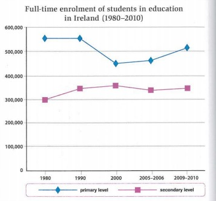

Wordlist — Catch-Up Day
A revision day — these words come up across today's exercises.
| word / phrase | meaning | example |
|---|---|---|
| fluctuate | to rise and fall irregularly | Enrolment numbers fluctuated slightly over the period. |
| decline (n.) | a gradual decrease | The Internet has caused a decline in newspaper sales. |
| conventional | traditional, following the usual way of doing something | Conventional newspapers are read less than they used to be. |
| exploit (v.) | to use something for one's own advantage, often unfairly | The website exploits a weakness in how browsers store data. |
| obtain | to get something, often through effort | The company obtained the information without permission. |
| confess | to admit something, often something embarrassing | He confessed that he had never read a newspaper. |
| gather | to collect information or people together | The site gathers data about which groups you belong to. |
| enrolment | the number of people registered for a course or institution | School enrolment figures are published every year. |
| stable (adj.) | staying the same, not changing much | Numbers remained stable for most of the decade. |
| browse | to look through something, especially online, without a fixed goal | She browsed the Web for more information. |
Match each word to its definition.
True or false?
1. If something fluctuates, it stays exactly the same at all times.
2. A conventional approach is traditional and usual.
3. To confess something means to keep it a secret forever.
4. Enrolment refers to the number of people registered for something.
5. If numbers remain stable, they change dramatically from one year to the next.
Article — What Websites Know About You
Read the article below, then answer the questions that follow.
Most people assume that browsing the Web anonymously is the default — that unless you log in somewhere, a website has no way of knowing who you are or what else you've been doing online. In reality, a surprising amount of information can be gathered without you ever entering a password.
One long-known technique exploits a simple fact: your browser keeps a record of every page you've visited, partly so that visited links can be shown in a different colour. A website can quietly test whether your browser recognises a long list of other web addresses as "visited," and in doing so, build up a picture of which other sites — and even which specific interest groups or forums — you've been active on. None of this requires your permission, and until browser makers began closing the loophole, most people had no idea it was possible.
Privacy researchers argue that this kind of technique is exactly why "I have nothing to hide" is not a satisfying response to concerns about online tracking. The concern isn't usually a single embarrassing fact being exposed, but rather how many small, seemingly harmless details can be gathered and combined into a far more revealing profile than any one website was ever given directly.
True or false?
1. Most people assume they are completely anonymous online unless they log in.
2. The technique described requires the user to enter a password.
3. Browsers keep track of which links a user has visited.
4. This technique could reveal which interest groups a person has been part of.
5. According to the article, "I have nothing to hide" fully addresses the privacy concern.
Write a short summary of the article (about 60 words).
Speaking — record your answers to these questions.
Vocabulary Revision
Complete each of these sentences with the correct form of learn, teach, study, know, or find out.
1. Some people learn to speak a new language faster than others. (example)
2. I'll how much the book costs and call you back.
3. This software is great — it's me how to pronounce some difficult English sounds.
4. Unfortunately, my brother should have harder for his exams.
5. My tutor was annoyed because he didn't why I was late for the lecture.
6. I prefer in the library, where it's quiet.
7. We haven't phonetics with our course tutor yet.
8. I was going to tell Mark about the test, but he already .
Complete the sentences below with words connected with the Internet from the box, in the correct form.
browse · chat · download · go · keep · visit
1. I browse the Web to look for the information I need for my studies. (example)
2. I with my friends using a social networking site.
3. Although there are millions of websites, most people just a few favourites frequently.
4. Facebook is a great way to in touch with your friends.
5. When I want to buy something, first I online to compare products and prices.
6. I films onto my computer because I find it more convenient than going to the cinema.
Complete each of these sentences with the correct form of cause, factor, or reason.
1. There are several factors which influence people when deciding where to go on holiday. (example)
2. The Internet has been the main of the decline of conventional newspapers.
3. One why young people watch less television is that they have less time.
4. Online advertising is successful for a number of . One is that people can react to it instantly.
5. You can only really deal with a problem if you understand its .
6. Advertising is influential, but price will always be the main influencing your decision to buy.
Grammar Revision
Complete these sentences with the past simple, present perfect, or present perfect continuous of the verb in brackets. In some cases, two forms are possible.
1. I have been learning (learn) Japanese for two years now. (example)
2. (you decide) which university to apply for yet?
3. My favourite author (write) his first book ten years ago.
4. Not everyone in my old high school (come from) the local area.
5. We (wait) here for half an hour, but my tutor still hasn't arrived.
6. Maisie (feel) very nervous before the presentation, but it went well.
7. Since the heavy rains started, my sister (travel) to college by bus.
8. My neighbour recently confessed that he (never read) a newspaper in his life!
Study this graph and complete each sentence below using a preposition from the box. Two of the prepositions are used twice.
at · between · by · from · in · of · over · to

The chart shows changes in Irish school enrolment figures 1. over a 30-year period. (example)
2. 1980 and 2010, there were always more students at primary level than at secondary level.
About 550,000 students were studying at primary level 3. 1980, and this figure remained stable 4. the next ten-year period. Enrolments fell 5. 100,000 during that period after that, then rose gradually 6. 500,000 at the end of the first decade of the 21st century.
Enrolments in secondary education fluctuated slightly during this time period. 7. 1980 to 2000, there was an increase 8. 50,000 students, and numbers reached 350,000. The next five years showed a slight decrease 9. numbers, and since 2005, numbers have remained stable 10. 325,000.
Overall, while primary school numbers have fallen slightly, secondary school enrolments have risen.
Complete these sentences with however, although, on the other hand, or even though.
In most cases, more than one answer is correct.
1. Television advertising is expensive. However / On the other hand, it reaches the widest audience. (example)
2. TV advertisements are often amusing, I don't like them when they interrupt films on TV.
3. Chen never uses online dictionaries. , his teacher recommends them.
4. Printed books have been around for centuries. , I think they will become obsolete in the next few years.
5. Printed books have been around for centuries. , electronic books are relatively new.
Complete this paragraph by writing a, an, the, or "–" if you think no article is needed.
In some cases, more than one answer is possible.
When you join 1. a group on 2. social networking site, you may be revealing more about yourself than you want to. 3. experimental website has managed to identify 4. names of people who visit it by gathering 5. information about 6. groups they belong to. 7. website exploits 8. fact that your web browser keeps a list of 9. web addresses you have visited. 10. owners of websites can obtain this information by hiding 11. list of 12. web addresses in the code for their web page. When someone accesses 13. page, their browser will tell 14. website owner which of 15. hidden addresses have already been visited.